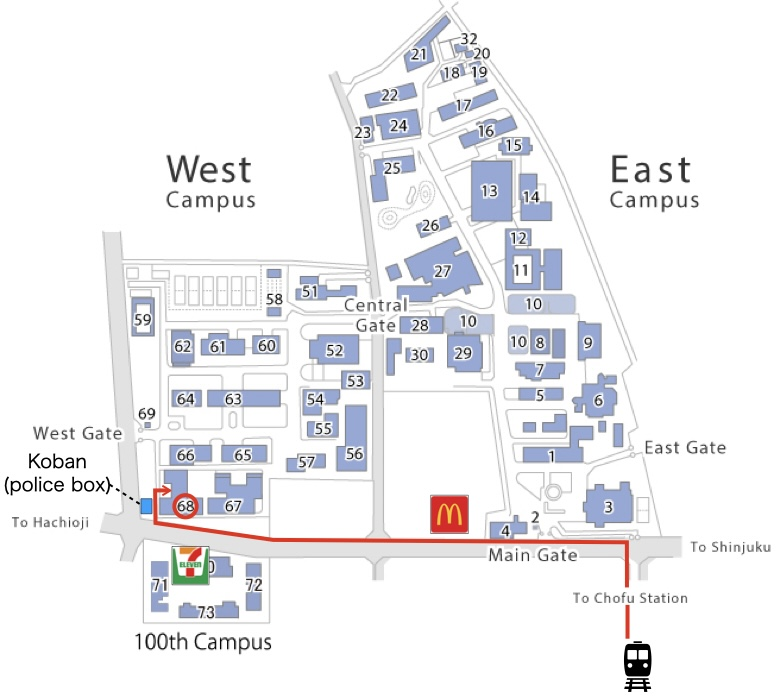

Summer school
There will be a summer school on June 20-21 at the University of Electro-Communications, Chofu, Tokyo, Japan.
There will be two lecturers:
Jesper Jansson (Kyoto University, Japan)
Jesper Jansson received the Ph.D. degree in Computer Science from Lund University in Sweden. He is currently an Associate Professor at Kyoto University in Japan and the Section Editor-in-Chief for the "Analysis of Algorithms and Complexity Theory" section of the MDPI open-access journal "Algorithms". His main research areas are graph algorithms, data structures, computational complexity, and bioinformatics, and he is especially interested in combinatorial problems from the biological sciences that can be expressed elegantly and solved efficiently using graphs and tree structures.
Title: Phylogenetic consensus trees
Abstract: Phylogenetic trees are commonly used by scientists to describe evolutionary relationships. However, inferring an accurate phylogenetic tree can be a difficult task. An important problem is therefore to combine a given set of alternative phylogenetic trees having the same leaf labels but different branching structures into a single tree called a consensus tree in the best way possible. This lecture will survey fast algorithms for constructing the most popular types of consensus trees, using various definitions of "in the best way possible" proposed in the last half-century, and discuss some related open problems.
Philip Wellnitz (National Institute of Informatics, Japan)
Philip Wellnitz received his Ph.D. degree in Computer Science from Saarland University in Germany. Then, he spent two and a half years as a postdoctoral researcher at the Max Planck Institute for Informatics, where he was coordinating the "Parameterized and Counting Algorithms and Complexity" research area and co-coordinating the "String Algorithms and Data Compression" research area. From April 2024, he is an Assistant Professor at the National Institute of Informatics (NII) in Tokyo. He is interested in designing efficient algorithms and matching (conditional) lower bounds for pattern matching problems in general and specifically for approximate string matching problems, as well as (counting) problems in graphs, among others.
Title: From Strings to Seaweeds: Modern Tools for Classical Problems
Abstract: Introduced in recent years by Tiskin [SODA'10, Algorithmica'15], the seaweed monoid of permutation matrices has been a crucial ingredient to obtaining recent theoretical breakthroughs in the realm of (approximate) string matching. We are going to discuss the basic ideas behind Tiskin's seaweed technology, as well as some of the recent applications to computing approximate occurrences of one string in another string (meaning with at most k errors) and to computing the (weighted) edit distance between strings.
Programme
| Thursday, June 20, 2024 | |
| 09:45 - 10:00 | Opening |
| 10:00 - 12:00 | Phylogenetic consensus trees Part 1 (Jesper Jansson) |
| 12:00 - 14:00 | Lunch break |
| 14:00 - 16:00 | Phylogenetic consensus trees Part 2 (Jesper Jansson) |
| 16:00 - 18:00 | Poster session |
| Friday, June 21, 2024 | |
| 10:00 - 12:00 | From Strings to Seaweeds: Modern Tools for Classical Problems Part 1 (Philip Wellnitz) |
| 12:00 - 14:00 | Lunch break |
| 14:00 - 16:00 | From Strings to Seaweeds: Modern Tools for Classical Problems Part 2 (Philip Wellnitz) |
| 16:00 - 16:15 | Closing |
Lunches are not provided. Back to top
Access and local information
The directions to the University of Electro-Communications are available here.
The venue is room 335, third floor, Building W-9 (68). We recommend that you enter the campus through the side gate next to the police box. (Google Map)

The University Center (29) has a cafeteria, restaurant, and stores (It is usually crowded during the hours of 12:00-13:00.). There are also restaurants around Chofu Station.
Registration:
The school is organized by Paweł Gawrychowski (gawry[at]cs.uni.wroc.pl), Hideo Bannai (hdbn.dsc[at]tmd.ac.jp) and Takuya Mieno (tmieno[at]uec.ac.jp).